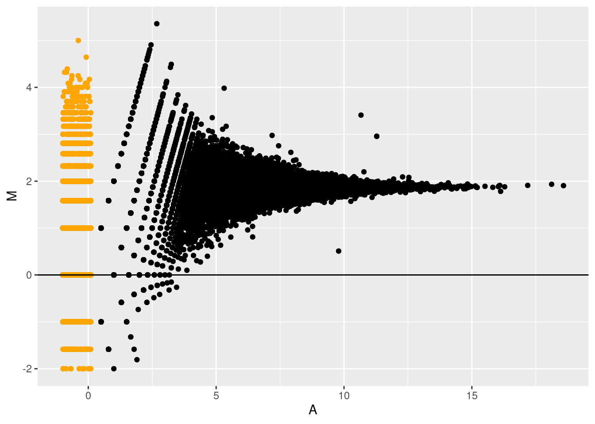
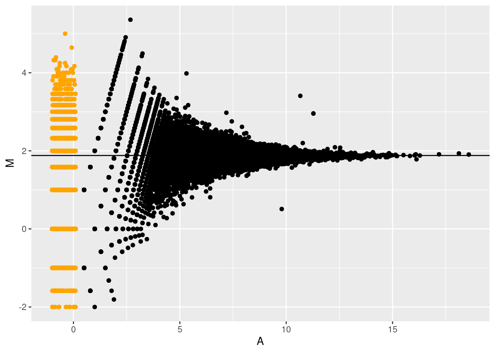
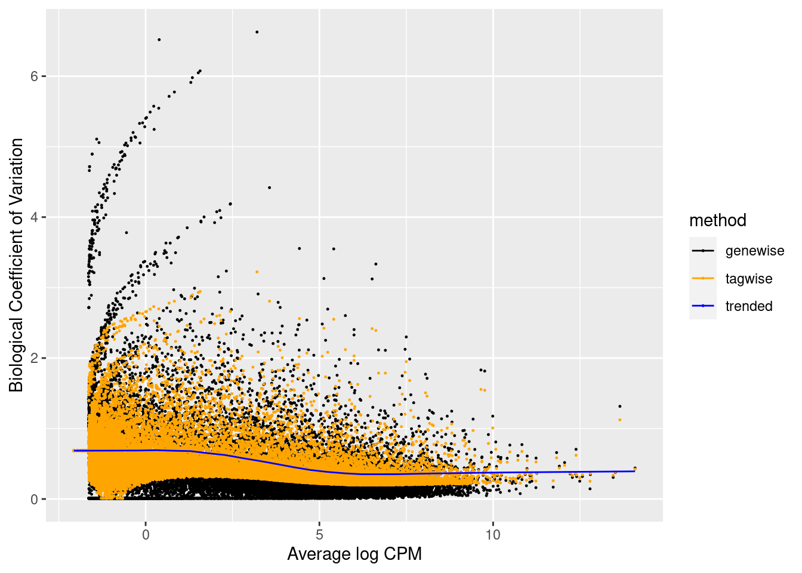

In this lecture we will introduce the main principles of working with
count data, and how to model these using generalized linear models
(GLMs). We focus on introducing the concept of generalized linear
models, and how they can be applied to genomics data analysis.
The Poisson
distribution
- The Poisson distribution is a typical count distribution that is
generally popular and fairly easy to work with. It is defined by a
single parameter: its mean \(\mu\). For
a Poisson distributed random variable \(Y_i\) with observations \(i \in \{1, \ldots, n\}\), its variance is
equal to its mean. That is, if
\[Y_i \sim Poi(\mu)\] , then
\[E(Y_i) = Var(Y_i) = \mu.\]
This immediately shows an important feature of count data: the
mean-variance relationship. Indeed, in count data, the
variance will always be a function of the mean.
This is quite intuitive. Consider the following example. You have
two bird cages, where in one bird cage there are \(10\) birds, while in the other there are
\(100\) birds. You let a sample of
people look to the number of birds in either one of the cages. It seems
unlikely that a person in front of the 10-bird cage would come up with
an estimate of \(3\), while it seems
likely that someone in front of the 100-bird cage would come up with an
estimate of \(80\). Even though the
difference from the true value is the same, the exact value has an
impact on the plausible deviation around it.
set.seed(11)
y1 <- rpois(n=500, lambda=10)
y2 <- rpois(n=500, lambda=100)
par(mfrow = c(1,2))
qplot(y1, main="Poisson(10)", geom = "histogram", binwidth=.5,center=0)

qplot(y2, main="Poisson(100)", geom = "histogram", binwidth=.5,center=0)

The Poisson
distribution in RNA-seq
- In RNA-seq, technical replicates represent different aliquots of the
same sample being sequenced repeatedly. The underlying true expression
of a gene can hence safely be assumed to be equal across these technical
replicates.
- Marioni et
al. (2008) have shown that, for most genes, the distribution of
observed gene expression counts across technical replicates follow a
Poisson distribution. A small proportion of genes (\(\sim 0.5\%\)) do not follow this Poisson
model, however, and actually show evidence for ‘extra-Poisson
variation’.
Relative uncertainty
for Poisson distributed random variables
Take a minute to consider the following question:
- Suppose that we have a solid tumor sample from a cancer patient, as
well as a sample of surrounding healthy tissue. For each sample, we have
three technical replicates at our disposal. Let \(Y_{grt}\) denote the observed gene
expression values of gene \(g\) in
replicate \(r \in \{1,2,3\}\) from
tissue \(t \in \{0,1\}\), where \(t=0\) denotes healthy tissue and \(t=1\) denotes tumoral tissue.
- We then know that the random variables \(Y_{gr0}\) and \(Y_{gr1}\) follow a Poisson distribution,
and we would estimate its mean as \(\bar{Y}_{g0} = \frac{1}{3} \sum_{r=1}^3
Y_{gr0}\) and \(\bar{Y}_{g1} =
\frac{1}{3} \sum_{r=1}^3 Y_{gr1}\), respectively.
- Similar, for another gene \(k\), we
observe \(Y_{krt}\), and estimate \(\bar{Y}_{k0}\) and \(\bar{Y}_{k1}\) correspondingly.
- Now suppose that \(\beta_{k} =
\bar{Y}_{k1} / \bar{Y}_{k0} = 5\), but also \(\beta_g = \bar{Y}_{g1} / \bar{Y}_{g0} =
5\), i.e., the two genes have the same average expression ratio
(also often called a fold-change) across samples. However, they are
differently expressed as \(\bar{Y}_{k1} =
100\), and \(\bar{Y}_{g1} = 10\)
(making \(\bar{Y}_{k0} = 20\), and
\(\bar{Y}_{g0} = 2\)).
- For which of the two genes is the uncertainty on the expression
ratio the highest? In other words, do we trust \(\beta_k\) more or do we trust \(\beta_g\) more?
Let’s approximate the uncertainty in \(beta_g\) and \(\beta_k\) using simulation:
N <- 1e3
beta_g <- beta_k <- vector(length=N)
for(ii in 1:N){
ygr1 <- rpois(n=3, lambda=10)
ygr0 <- rpois(n=3, lambda=2)
ykr1 <- rpois(n=3, lambda=100)
ykr0 <- rpois(n=3, lambda=20)
beta_g[ii] <- mean(ygr1) / mean(ygr0)
beta_k[ii] <- mean(ykr1) / mean(ykr0)
}
par(mfrow=c(1,2), mar=c(4,2,3,1))
hist(beta_g, breaks=seq(0,50,by=1), xlim=c(0,50))
hist(beta_k, breaks=seq(0,50,by=1), xlim=c(0,50))

We clearly see that the uncertainty on \(\beta_k\) is much lower than on \(\beta_g\). Even though the variance on the
counts of gene \(k\) is higher, since
its mean is higher and it is distributed as a Poisson variable. How do
we explain this?
- We may explain this by considering the relative uncertainty on the
mean. Relative uncertainty may be defined as the coefficient of
variation \(CV = \frac{\sigma}{\mu}\)
(this is, the standard deviation divided by the mean). Indeed, the CV
describes the relative deviation of the distribution relative to its
mean, where a low CV indicates low dispersion with respect to the
mean.
- Calculating the CV shows that the relative uncertainty for
gene \(k\) than for gene \(g\), even though the variance on the raw
counts is higher for gene \(k\) than
for gene \(g\).
- This lower relative uncertainty on the mean then propagates further
to a lower uncertainty on the fold-change. This basic result will be
essential for understanding the results of a differential expression
analysis!
sqrt(100)/100 #CV for gene k
## [1] 0.1
sqrt(10)/10 #CV for gene g
## [1] 0.3162278
Modeling count data:
Generalized linear models
Just like we have modeled protein abundances in the proteomics module
of this course in order to assess differential protein abundance, we can
model gene expression counts to identify genes with differences in
average expression between groups of samples.
Why we can(’t) use
linear models to model count data
- If we are using a linear model to model a response \(Y_i\), with \(i
\in \{1, \ldots, n\}\) in function of a single covariate \(X_i\), the linear model can be defined as
follows:
\[
\left\{
\begin{array}{ccc}
Y_i & = & \beta_0 + \beta_1 x_i + \epsilon_i \\
Y_i | x_i & \sim & N(\beta_0 + \beta_1 x_i, \sigma^2 ).
\end{array}
\right.
\]
- Or, equivalently, we can write it in matrix form as \[
\left\{
\begin{array}{ccc}
Y & = & \mathbf{X}^T \boldsymbol{\beta} + \epsilon \\
Y | \mathbf{X} & \sim & N(\mathbf{X} \boldsymbol{\beta},
\sigma^2 \mathbf{I}),
\end{array}
\right.
\] where \(\mathbf{X}\) now
represents our \(n \times p\) design
matrix, with row \(i\) corresponding to
observation \(i\).
The variance-covariance matrix of \(\mathbf{Y}\) is assumed a diagonal matrix
with \(\sigma^2\) on the diagonal
elements and zero everywhere else. This means that the data points are
uncorrelated, and that every observation has the same variance \(\sigma^2\), also referred to as
homoscedasticity.
The latter does not hold for count data, due to the mean-variance
relationship. This makes linear models, in its basic form, unsuitable to
model count data.
In addition, count data are non-negative, while there are no such
constraints in the standard linear model to make sure that our estimates
will be non-negative. Indeed, \(\hat{Y}_i =
\hat\mu_i = \mathbf{X}^T_i \hat{\beta} \in ] -\infty,
\infty[\).
Generalized linear
models
- As the name suggests, generalized linear models (GLMs) extend linear
models. In GLMs, we extend two things with respect to the linear model:
- The conditional distribution of the response variable \(Y_i | X_i\) can be assumed to
follow any distribution that belongs to the exponential
family of distributions, which includes the Gaussian but also
other commonly known distributions, such as the Binomial, Gamma and
Poisson distribution.
- The linear model assumed a linear relationship between \(Y_i\) and \(X_i\), since we assumed that \(E(Y_i | X_i) = \mathbf{X}^T_i \beta\). In
GLMs, we will allow a link function \(g()\) that links the conditional mean to
the covariates. Hence, in GLMs we have that \(g(E(Y_i | X_i)) = \mathbf{X}^T_i \beta\).
Note that each family has got a canonical link function, which is the
identity link function \(g(\mu) = \mu\)
for Gaussian, the log link function \(g(\mu) =
\log \mu\) for Poisson, or the logit link function \(g(\mu) = \log(\frac{\mu}{1-\mu})\) for
Binomial.
A Poisson GLM
- We can define a Poisson GLM as follows \[
\left\{
\begin{array}{ccc}
Y_i & \sim & Poi(\mu_i) \\
\log \mu_i & = & \eta_i \\
\eta_i & = & \mathbf{X}^T_i \beta \\
\end{array}
\right.
\] where \(Y_i\) is the
response variable, with mean \(\mu_i\),
\(\eta_i\) is the linear predictor,
\(\mathbf{X}\) is the \(n \times p\) model matrix and \(\beta\) is the \(p \times 1\) matrix of regression
coefficients.
- It is insightful to compare this model to a linear model where \(Y_i\) is log-transformed. Indeed, in the
linear model case, we would be modeling \(E(\log Y_i )\), while in the GLM we are
modeling \(\log E(Y_i)\).
- This shows that in the GLM setting we are modeling a transformed
version of the expected value, and after retransforming we can interpret
the fit in terms of the mean of our response variable. In the
transformed linear model, however, we are working with the expected
value of a transformed version of our response variable, and we will not
be able to interpret the fit in terms of the mean (because \(E( \log Y_i) \ne \log E(Y_i)\). In this
specific case, we would have to resort to interpreting changes in terms
of a geometric mean.
- Also note that \(\mathbf{X}^T_i \beta \in
]-\infty, \infty[\), while \(Y_i\) must be non-negative \([0, \infty[\). The link function helps with
this, since the exponential function transforms any real number to a
non-negative number, i.e., \(\exp(\mathbf{X}^T_i \beta) \in [0,
\infty[\).
Sequencing Data
In this lecture we will start working with a real bulk RNA-seq
dataset from Haglund
et al. (2012).
Lets try to work out the experimental design using the following
paragraph from the Methods section of the paper.
Technical
repeats
There are technical repeats in the data!
data("parathyroidGenesSE", package="parathyroidSE")
se <- parathyroidGenesSE
rm(parathyroidGenesSE)
colData(se) %>% knitr::kable(.)
| SRR479052 |
SRX140503 |
1 |
Control |
24h |
SRA051611 |
SRP012167 |
SRS308865 |
| SRR479053 |
SRX140504 |
1 |
Control |
48h |
SRA051611 |
SRP012167 |
SRS308866 |
| SRR479054 |
SRX140505 |
1 |
DPN |
24h |
SRA051611 |
SRP012167 |
SRS308867 |
| SRR479055 |
SRX140506 |
1 |
DPN |
48h |
SRA051611 |
SRP012167 |
SRS308868 |
| SRR479056 |
SRX140507 |
1 |
OHT |
24h |
SRA051611 |
SRP012167 |
SRS308869 |
| SRR479057 |
SRX140508 |
1 |
OHT |
48h |
SRA051611 |
SRP012167 |
SRS308870 |
| SRR479058 |
SRX140509 |
2 |
Control |
24h |
SRA051611 |
SRP012167 |
SRS308871 |
| SRR479059 |
SRX140510 |
2 |
Control |
48h |
SRA051611 |
SRP012167 |
SRS308872 |
| SRR479060 |
SRX140511 |
2 |
DPN |
24h |
SRA051611 |
SRP012167 |
SRS308873 |
| SRR479061 |
SRX140511 |
2 |
DPN |
24h |
SRA051611 |
SRP012167 |
SRS308873 |
| SRR479062 |
SRX140512 |
2 |
DPN |
48h |
SRA051611 |
SRP012167 |
SRS308874 |
| SRR479063 |
SRX140513 |
2 |
OHT |
24h |
SRA051611 |
SRP012167 |
SRS308875 |
| SRR479064 |
SRX140513 |
2 |
OHT |
24h |
SRA051611 |
SRP012167 |
SRS308875 |
| SRR479065 |
SRX140514 |
2 |
OHT |
48h |
SRA051611 |
SRP012167 |
SRS308876 |
| SRR479066 |
SRX140515 |
3 |
Control |
24h |
SRA051611 |
SRP012167 |
SRS308877 |
| SRR479067 |
SRX140516 |
3 |
Control |
48h |
SRA051611 |
SRP012167 |
SRS308878 |
| SRR479068 |
SRX140517 |
3 |
DPN |
24h |
SRA051611 |
SRP012167 |
SRS308879 |
| SRR479069 |
SRX140518 |
3 |
DPN |
48h |
SRA051611 |
SRP012167 |
SRS308880 |
| SRR479070 |
SRX140519 |
3 |
OHT |
24h |
SRA051611 |
SRP012167 |
SRS308881 |
| SRR479071 |
SRX140520 |
3 |
OHT |
48h |
SRA051611 |
SRP012167 |
SRS308882 |
| SRR479072 |
SRX140521 |
4 |
Control |
48h |
SRA051611 |
SRP012167 |
SRS308883 |
| SRR479073 |
SRX140522 |
4 |
DPN |
24h |
SRA051611 |
SRP012167 |
SRS308884 |
| SRR479074 |
SRX140523 |
4 |
DPN |
48h |
SRA051611 |
SRP012167 |
SRS308885 |
| SRR479075 |
SRX140523 |
4 |
DPN |
48h |
SRA051611 |
SRP012167 |
SRS308885 |
| SRR479076 |
SRX140524 |
4 |
OHT |
24h |
SRA051611 |
SRP012167 |
SRS308886 |
| SRR479077 |
SRX140525 |
4 |
OHT |
48h |
SRA051611 |
SRP012167 |
SRS308887 |
| SRR479078 |
SRX140525 |
4 |
OHT |
48h |
SRA051611 |
SRP012167 |
SRS308887 |
se %>%
colData %>%
as.data.frame %>%
pull(sample) %>%
nlevels
## [1] 23
## [1] 27
Extract sample names of duplicates!
dupl <- which(table(colData(se)$sample) > 1) %>% names
techreps <- assays(se)$counts[,colData(se)$sample==dupl[1]]
Explore data of two technical repeats.
qplot(techreps[,1],techreps[,2]) +
geom_abline(intercept = 0, slope = 1) +
xlab("Technical repeat 1") +
ylab("Technical repeat 2")

qplot(techreps[,1],techreps[,2], log="xy") +
geom_abline(intercept = 0, slope = 1) +
xlab("Technical repeat 1") +
ylab("Technical repeat 2")
## Warning: Transformation introduced infinite values in continuous x-axis
## Warning: Transformation introduced infinite values in continuous y-axis

A <- techreps %>% log2 %>% rowMeans
M <- techreps %>% log2 %>% apply(.,1,diff)
w <- techreps[,1]==min(techreps[,1]) | techreps[,2]==min(techreps[,2])
if (any(w)) {
A[w] <- runif(sum(w), min = -1, max = .1)
M[w] <- log2(techreps[w,2] + 1) - log2(techreps[w,1] + 1)
}
MAplot <- qplot(A, M, col=w) +
theme(legend.position = "none") +
scale_color_manual(values = c("black","orange"))
MAplot +
geom_abline(intercept=0,slope=0)

## [1] 5251911 19332369
logFCavg <- colSums(techreps) %>% log2 %>% diff
logFCavg
## [1] 1.880104
The technical repeats differ almost with a factor 2 in sequencing
depth!
MAplot + geom_abline(intercept = logFCavg, slope = 0)

Count scaling using
GLM offsets
We have previously discussed count scaling transformations such
as CPM and TPM.
A more appropriate and natural way when working with GLMs is
through the use of offsets. The general use of an offset is to account
for the ‘effort’ performed in order to gather that observation of the
response variable.
\(\rightarrow\) i.e. sample being
sequenced deeper contains more information as compared to a sample being
sequenced relatively shallow. We have more confidence in a count from a
deeply sequenced sample than that from a shallowly sequenced sample. We
can therefore use the sequencing depth \(N_i=\sum_g Y_{gi}\) as offset in the
model.
Adding an offset to the model is different from adding a new
variable to the model. For each new variable we add, we will estimate
its average effect \(\beta\) on the
response variable. When adding an offset, however, we implicitly set
\(\beta=1\).
Offsets are typically added on the scale of the linear predictor.
Suppose we have a gene g and sample i specific offset \(O_{gi}\), then we can define our GLM
including the offset as
\[
\left\{
\begin{array}{ccc}
Y_{gi} & \sim & Poi(\mu_{gi}) \\
\log \mu_{gi} & = & \eta_{gi} \\
\eta_{gi} & = & \mathbf{X}^T_i \beta_g + log(O_{gi}) \\
\end{array}
\right.
\]
When we would like to correct for the overall sequencing depth \(O_{gi}=N_i\). Note, that better offsets
exist!
Note, that
\[
\mu_{ig}= \exp(\mathbf{X}^T_i \beta_g) \times O_{gi}
\] or \[
\log\left(\frac{\mu_{ig}}{O_{gi}}\right)= \mathbf{X}^T_i \beta_g
\]
Biological
repeats
We extract the four biological repeats from the study for the control
treatment at time 24h.
bioreps <- colData(se)$treatment=="Control" & colData(se)$time=="24h"
biorepCounts <- assays(se)$counts[,bioreps]
qplot(rowMeans(biorepCounts),rowVars(biorepCounts),log="xy") +
geom_abline(intercept = 0,slope = 1,col="red") +
geom_smooth(col="orange")
## Warning: Transformation introduced infinite values in continuous x-axis
## Warning: Transformation introduced infinite values in continuous y-axis
## Warning: Transformation introduced infinite values in continuous x-axis
## Warning: Transformation introduced infinite values in continuous y-axis
## `geom_smooth()` using method = 'gam' and formula 'y ~ s(x, bs = "cs")'
## Warning: Removed 37702 rows containing non-finite values (stat_smooth).

Having data on thousands of genes provides the opportunity to
empirically assess the mean-variance relationship.
It is clear that the data is overdispersed with respect to the
Poisson distribution (red y=x line). There also seems to be a quadratic
trend of the variance as a function of the mean.
Negative binomial
distribution
The observed quadratic mean variance trend has motivated the use of
the negative binomial distribution to model (bulk) RNA-seq gene
expression data.
\[
\left\{
\begin{array}{ccc}
Y_{gi} & \sim & NB(\mu_{gi},\phi_g) \\
\log \mu_{gi} & = & \eta_{gi} \\
\eta_{gi} & = & \mathbf{X}^T_i \beta_g + log(O_{gi}) \\
\end{array}
\right.
\]
with
\[
\text{var}[Y_{gi}] = \mu_{gi} + \phi_g \mu_{gi}^2
\]
| total variability |
= |
technical variability |
+ |
biological variability |
| \(\text{var}[Y_{gi}]\) |
= |
\(\mu_{gi}\) |
+ |
\(\phi_g \mu_{gi}^2\) |
| total CV\(^2\) |
= |
\(\frac{1}{\mu_{gi}}\) |
+ |
\(\phi_g\) |
What about technical
repeats?
- Technical repeats are Poisson distributed.
- The sum of two Poisson distributed counts is again Poisson. So we
can summarize over technical repeats by taking the sum of the
counts.
Estimating the
overdispersion?
- For every single gene: not enough data
- Common dispersion for all genes
- Trended dispersion
- Gene wise, EB shrinkage to a common (trended) dispersion: Borrow
strength across genes (McCarthy & Smyth (2012). Nucleic Acid
Research)
seSub <- se[,colData(se)$treatment=="Control"]
y <- DGEList(counts = assays(seSub)$counts)
design <- model.matrix(~time,colData(seSub))
keep <- filterByExpr(y,design)
y <- calcNormFactors(y)
y <- estimateDisp(y, design)
yNoEB <- estimateDisp(y, design, prior.df = 0)
o <- order(y$AveLogCPM)
data.frame(
AveLogCPM=rep(yNoEB$AveLogCPM[o],2),
BCV=sqrt(
c(yNoEB$tagwise.dispersion[o],
y$tagwise.dispersion[o])
),
method=rep(c("genewise","tagwise"), each=nrow(y))) %>%
ggplot(aes(AveLogCPM,BCV,color=method)) +
geom_point(size = .2) +
geom_line(
data = data.frame(
AveLogCPM=y$AveLogCPM[o],
BCV = sqrt(y$trended.dispersion[o]),
method="trended")) +
scale_colour_manual(values =c('black','orange','blue'))+
ylab("Biological Coefficient of Variation") +
xlab("Average log CPM")

Note, that
- The gene-wise dispersion is very variable (black dots).
- There is a dispersion - mean trend (blue line)
- The tag-wise dispersions are the result of shrinking the gene-wise
dispersion to the trend (orange dots)
Statistical
Inference
Asymptotic statistical tests exist to test if (contrasts of the)
parameters of the GLM are different from zero.
Implemented in edgeR and DESeq2.
Again we have to correct for multiple testing !!!
fit <- glmFit(y,design)
head(fit$coefficients)
## (Intercept) time48h
## ENSG00000000003 -9.729611 0.07886000
## ENSG00000000005 -15.603134 -0.79826197
## ENSG00000000419 -10.300768 -0.08590654
## ENSG00000000457 -10.779141 -0.06598097
## ENSG00000000460 -9.943715 -0.97149122
## ENSG00000000938 -13.856723 0.34768900
Interpretation of model parameters?
lrt <- glmLRT(fit)
topTags(lrt)
## Coefficient: time48h
## logFC logCPM LR PValue FDR
## ENSG00000148773 4.337526 1.94406927 23.70674 1.121891e-06 0.07089569
## ENSG00000186185 6.002140 -0.35075184 18.70525 1.525615e-05 0.35922135
## ENSG00000155111 1.200286 5.82211830 18.49293 1.705354e-05 0.35922135
## ENSG00000136235 1.391258 5.27611471 17.94237 2.276955e-05 0.35971899
## ENSG00000183798 5.731975 -0.54551544 17.18546 3.390205e-05 0.42847441
## ENSG00000066279 3.306719 0.07103963 16.66540 4.458682e-05 0.46959584
## ENSG00000112984 3.894362 0.12171504 15.58252 7.898147e-05 0.71301085
## ENSG00000131747 2.810227 1.82160424 15.27886 9.274879e-05 0.73263430
## ENSG00000250958 4.841183 0.88849947 13.83869 1.991921e-04 1.00000000
## ENSG00000142748 -3.464043 -0.11396307 13.63378 2.221520e-04 1.00000000
